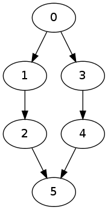

I looked at certain minimal graphs in a previous post. These were Hasse subgraphs obtained by a reduction algorithm which we will now call Hasse reduction which was defined as
For every edge \(x\) in \(G\) do
- Remove \(x=(u,v)\) from \(G\).
- If in the new graph \(G\setminus x\) there is no path from \(u\) to \(v\) then put \(x\) back in \(G\). Otherwise, leave \(x\) out.
Today I will look at another kind of reduction. I am going to consider the following kind of graphs:
I will call such graphs admissible. It is not very difficult to show that in an admissible graph for every vertex \(x\) there is a path from \(s\) to \(x\), and there is a path from \(x\) to \(t\). I will show this Lemma 1 below.
Lemma 1: Assume \(G=(V,E)\) is a directed admissible graph with a unique source \(s\) and a unique sink \(t\). Then for every vertex \(v\in V\) there is a path from \(s\) to \(v\) and there is a path from \(v\) to \(t\).
Proof: Assume \(v\in V\) is a vertex in \(G\). We will prove the existence of a path from \(s\) to \(v\). The proof for a path from \(v\) to \(t\) is similar. If \(v\) is the source then we have the trivial path \((s)\) of length \(0\) and the proof is completed. So, assume \(v_0=v\) is not the source. Then there is another vertex \(v_1\in V\setminus\{v_0\}\) such that \((v_1,v_0)\) is an edge. We proceed by induction. At each inductive step the vertex \(v_n\) we obtain is distinct from all of the vertices \({v_1,\ldots, v_{n-1}}\) since \(G\) contains no cycles. The process must terminate since \(V\) is a finite set, and the process ends at a source. Since \(G\) has a unique source, this vertex must be \(s\).
Let \(s\) be the unique source of \(G\) and \(t\) be the unique sink of \(G\). The type of minimal graph I would like to consider satisfies the following condition: if \((u,v)\) is an edge in \(G\) then every path connecting \(s\) to \(v\) passes through \(u\), and every path connecting \(u\) to \(t\) passes through \(v\).
In order to generate such minimal admissible graphs, I will apply the
following algorithm which I will call as Reduce. Assume
\(s\) denotes the unique source of
\(G\) and \(t\) denote the unique sink of \(G\).
For every edge \(x=(u,v)\) in \(G\) do
- Remove the edge \(x\) from \(G\)
- If there are no paths from \(s\) to \(v\) or there are no paths from \(u\) to \(t\) in \(G\setminus x\) then add \(x\) back to \(G\). Otherwise leave \(x\) out.
There is an important detail we need to check before we proceed: How
do we know that later in the for loop removing an edge destroys the
connectivity of another vertex \(w\)?
Assume, by way of contradiction, that we have a graph and we removed an
edge \((u,v)\) and it happened that we
have another vertex \(w\) such that
\(s\) is not connected to \(w\) or \(w\) is not connected to \(t\) because all such paths contained \((u,v)\). Assume, without loss of
generality, that \(w\) lost its
connection to \(t\) because the edge
\((u,v)\) was on all paths connecting
\(w\) to \(t\). Since Reduce is going to
remove \((u,v)\) we necessarily have
that \(u\) connected to \(t\) via a path. But \(w\) is connected to \(u\) because all paths from \(w\) to \(t\) passes through \(u\) by our assumption. Then removing \((u,v)\) will not separate \(w\) from \(t\). This is a contradiction.
For the implementation of the new reduction algorithm below, I will assume that the unique source is labelled by \(0\) and the unique sink is labelled by the number 1 less than the number of vertices in \(G\).
import igraph
def Reduce(G):
source = 0
sink = len(G.vs())-1
for edge in G.get_edgelist():
u = edge[0]
v = edge[1]
G.delete_edges([edge])
if len(G.get_shortest_paths(source,v)[0])==0 or len(G.get_shortest_paths(u,sink)[0])==0:
G.add_edges([edge])
return(G)Let us test the algorithm on a graph which is not minimal:
g = igraph.Graph(6)
g.to_directed()
g.add_edges([(0,1),(4,5),(2,5),(1,3),(0,2),(3,4),(2,3),(3,5),(0,3),(1,5)])
Now, let us reduce the graph using our algorithm:
h = Reduce(g)Let us consider another example:
g = igraph.Graph(7)
g.to_directed()
g.add_edges([(0,1),(0,2),(1,4),(2,5),(1,3),(3,5),(4,6),(5,6)])This should be irreducible, that is, it should not change
when we apply Reduce. So, let us reduce it:
h = Reduce(g)Proposition 2: Our reduction algorithm
Reduce is stronger than the Hasse reduction algorithm
Hasse in the sense that any edge that is going be removed
using Hasse is going to be removed by Reduce
too. In other words, we have Hasse(Reduce(G)) = Reduce(G)
while it is possible that Reduce(Hasse(G)) is strictly
smaller than Hasse(G).
Proof: Let us start with the latter statement:
Reduce(Hasse(G)) may be strictly smaller than
Hasse(G). We will demonstrate this with an example.
Consider the graph
Hasse reduction algorithm will yield the same graph
while Reduce reduction algorithm will give us
Now, as for our former claim: if \(e=(u,v)\) is an edge and if there is a path
from \(u\) to \(v\) in \(G\setminus e\) then there is a path from
the unique \(s\) source to \(v\) and there is a path from \(u\) to the unique sink \(t\) in \(G\setminus e\). Thus we remove the edge
using the algorithm Reduce. This means every edge that
should be removed using Hasse is removed by the algorithm
Reduce.